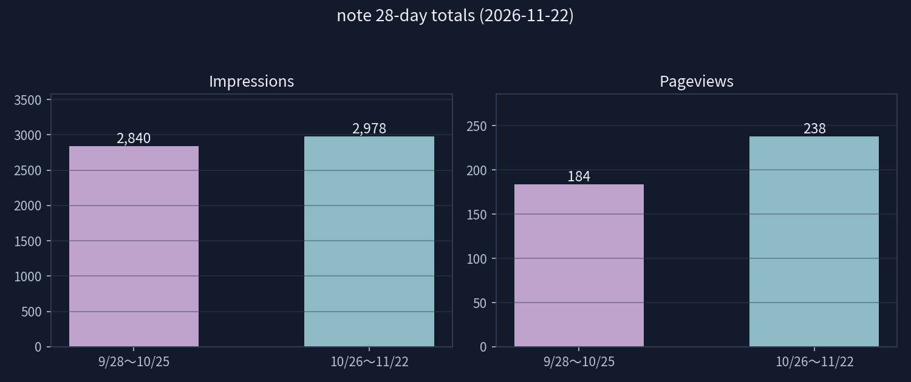
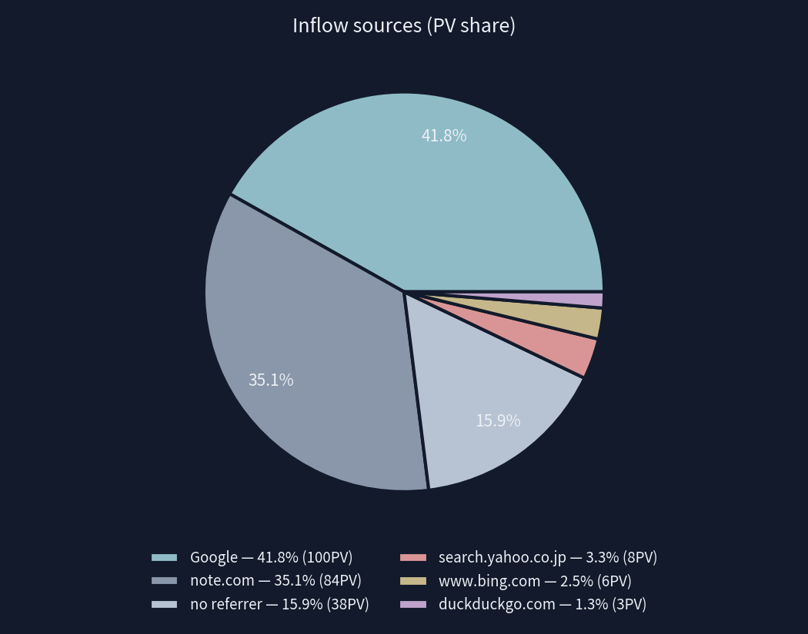
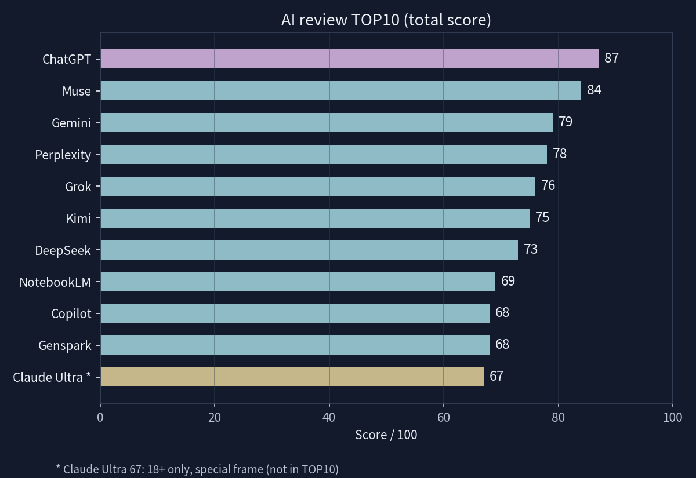
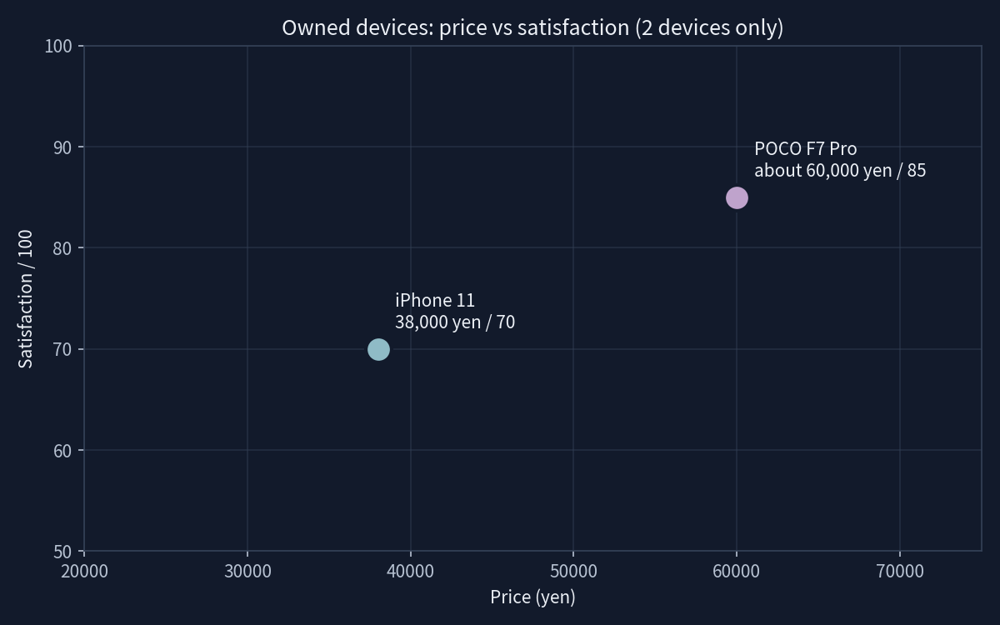

15歳の目線で、AIとガジェットを採点する。
このサイトは、15歳（中学3年生）のリョウが、実際に使ったAIとガジェットの記録を、点数とデータで残す研究所です。買う・使う直前の判断に迷う学生や格安ユーザーのために作っています。更新は週1回を目安にしています。
AI批評データ — TOP10
15歳による採点（100点満点）。採点基準は回答の質30／無料枠の広さ25／日本語の自然さ15／速さと使いやすさ15／学生の実用15です。内訳は簡単な表示にしています。31件すべての内訳は掲載しません。
読み込み中…
実機データベース
本人が実際に使っている機種だけの満足度です。持っていない機種はここには載せません。
読み込み中…
スマホ批評データ
フラッグシップ版とコスパ版は別コーナー（棲み分け）として掲載します。以下の機種は本人が持っていない機種の判断記事であり、実体験レビューではありません。
読み込み中…
Juno実験 — Python・データ処理
Juno（iPhone・無料の範囲）でPythonを実行して作ったグラフです。コードは juno/ にあります。
実験1：note運営データのグラフ化


実験2：AI批評の採点データの集計・棒グラフ化

実験3：実機の価格と満足度の散布図化

中古スマホ判断シミュレーター（フェーズ2・暫定版）
予算と条件を選ぶと、本人の批評データから機種を返します。データ源はスマホ批評TOP5（フラッグシップ版とコスパ版）だけです。povo対応は条件に含めません。
開発記録
準備中
このサイト自体をどう作ったかの記録（失敗も含む）をここに残します。開発の進み具合は週1回を目安に更新します。
- 2026-11-22：要件定義・サイトの骨格（Phase 1）を作成
- 2026-11-22：ChatGPT相談で配色をソフト版に修正し、GitHub Pagesで公開
- 2026-11-22：Juno実験3件のグラフとシミュレーター暫定版を追加